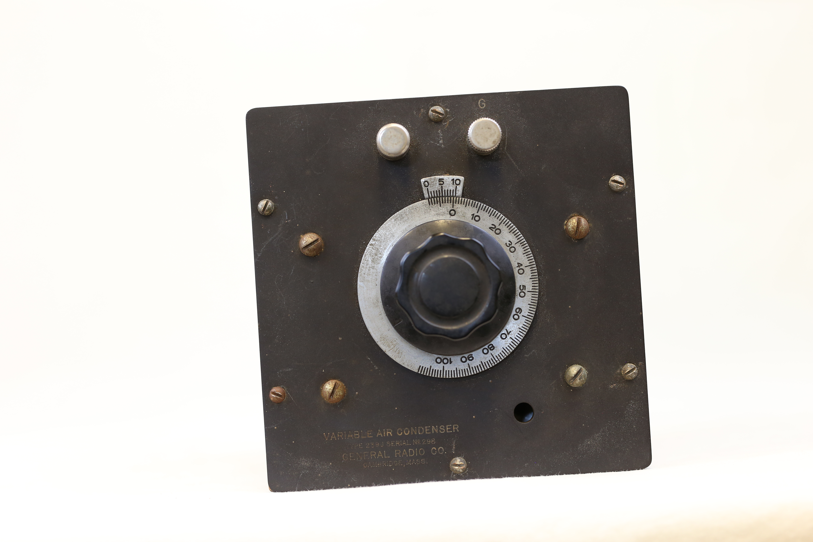

A wooden square box with a black slate top panel. One of the box’s side has 'C4' engraved on it.The bottom has a golden sticker with the instrument’s information written on it, including the manufacturer’s name. There are also four plastic stands at each of the corners at the bottom of the box. The top slate has a plastic knob, attached to a circular metal plate with farads units of measurement ( 0-100). There are two port terminals for circuit connection at sides of the top panel. The panel is mounted to the wooden box securely with screws.
(outside look)

This variable condenser is the older version of the current variable capacitor. It is an electronic component used to store and regulate electric charge. It is variable because its capacitance is adjustable. Typically, it consists of two sets of conductive plates: one stationary (stator) and the other one movable (rotor). These plates are often made of brass or aluminium and separated by gaps of air. Turning the knob at the top panel, changes the overlapping distance between the plates therefore causing a change in capacitance.
Markings: On the top panel, information on measurements, instrument and model specifications are provided. The side has ‘C4’ engraved. The bottom has additional technical information about the equipment.
Measurement: Farads(0-100)
Instrument information: Variable Air Condenser; Type 239J ; Serial No. 296. General Radio Co. Cambridge, Mass
Technical Information: Type 239J; Variable Air Condenser; The plates of this condenser are so cut as to obtain a nearly uniform wavelength variation. The plates are spaced 1/32; 33 plates are stationary and 32 rotary. The approximate O capacitance is .00003 M.f. The steel shaft runs in 45 degree brass cone bearings. Never lift the condenser by the rotating Knob; Calibration data; MicromicroFarads; 10 degrees = 33; 20 degrees = 130; 30 degrees = 345; 40 degrees = 580; 50 degrees = 815; 60 degrees = 1065; 70 degrees = 1325; 80 degrees = 1565; 90 degrees = 1865; 100 degrees = 2100; General Radio Company, Cambridge Mass.
Functionality and Application
This general radio 239 J variable condenser functions as a tunable capacitor, allowing for precise control over the amount of electric charge the circuit can store. By adjusting the knob, the position of the movable plates change relative to the fixed plates. As a result, the capacitance changes according to the desire of the user. This change in capacitance directly affects the resonant frequency of circuits, making them useful in applications like radio tuning, signal filtering and frequency matching. Air is used as the dielectric, therefore offering very low energy loss and high stability thus making it ideal for high frequency work and lab experiments. The design of this variable condenser ensures smooth adjustments that are not only accurate but also repeatable for fine-tuning electrical signal without introducing noise or instability into the system.
(video: turning the knob changes the overlap which in turn varies the capacitance)
During the radio boom era of e1920s-1940s, this variable condenser was used primarily in high-end radio receivers and transmitters to precisely tune and match frequencies. Inside the radios, it served a critical role in the tuning circuits, specifically within the LC resonant circuits, where adjusting the condenser’s capacitance allowed users to select a specific broadcast frequency. By adjusting the knob, the overlap of the plate would change, therefore shifting the resonant frequency of the circuit to match that of a desired radio station.
For transmitters, this condenser was used to fine tune oscillator circuits to ensure that the transmitted signals stayed at a steady, assigned frequency.
For engineers and educational labs, the variable condenser is used to experiment with waveforms, signal filtering and circuit behaviour by taking advantage of the high precision and low-loss air dielectric.
Given that this air condenser was stable and mechanically easy to use, it became a trusted tool for early radio pioneers, broadcasters and technicians during a time when accurate frequency control was essential for clear communication and regulation compliance.
Air Condensers Physics
Capacitance is the ability of a system to store electric charge when a voltage is applied. It is a fundamental property of a capacitor defined by the formula ;
C = εA / d
Where:
C is the capacitance, measured in farads (F)
ε (epsilon) is the permittivity of the dielectric material between the plates
A is the area of overlap between the two conductive plates
d is the distance between the plates
This 239J variable condenser is a rotary air dielectric capacitor, it uses air as the dielectric and changes capacitance by rotating a set of metal plates. As the rotor turns, the amount of overlap with the stator changes. The more the overlap, the greater the area A, the higher the capacitance, the lesser the area A, the lower the capacitance. This change in capacitance directly affects the resonant frequency f of a circuit, which is given by the formula:
f = 1 / (2π√(LC))
Where:
f is the resonant frequency (in hertz), at which the circuit naturally oscillates
L is the inductance of the coil in the circuit (in henries, H)
C is the capacitance (in farads, F), controlled by the condenser
π is the mathematical constant pi (≈ 3.142)
Therefore, by turning the knob, you are able to tune the circuit into different frequencies which becomes critical for selecting radio stations. The air is used as the dielectric because it does not absorb energy like solids do meaning it has a low loss, it keeps the capacitance linear and stable, which is important for tuning, and it prevents thermal drift, meaning the capacitance doesn’t change much with temperature.
Manufacturer's Information
General Radio Companywas founded on June 14, 1915 by Melville Eastham in Cambridge Massachusetts. The company's aim was to manufacture instruments and parts for precision measuring, especially those involved with receiving and transmitting signals. Among the early products manufactured by the company were: variable capacitors, spark gaps, crystal detectors, radio components and variable inductors. The company expanded and enriched its relevance during the first world war, as it manufactured needed equipment such as the portable wave meters, thus securing major contracts from telecommunication companies such as AT&T and the National Bureau of Standards. Notably, it built a synchronous rectifier to support AT&T in transatlantic communications during the first world war. Later on, the company grew and expanded due to the booming radio era, as its precision tools for signal transmission became more relevant.
Reflection From The Present
The modern versions of air capacitors come in smaller, lighter packages, and uses plastics and ceramics as dielectrics. These modern capacitors often use digital and electronic fine tunings. They are compact, faster and easy to automate. Compared to the old variable air condenser which provide smoother manual and analog controls. Though the use of plastics and ceramics as dielectric material provide more capacitance in smaller spaces, it often suffers from temperature drift and higher energy loss, which the traditional air condenser would have been resilient against. Modern capacitors are designed specifically to be used within modern technology in telecommunication, smartphones and radios, unlike the older ones which were primarily focused on analog radio tuning and lab experiments. This 239J variable air condenser